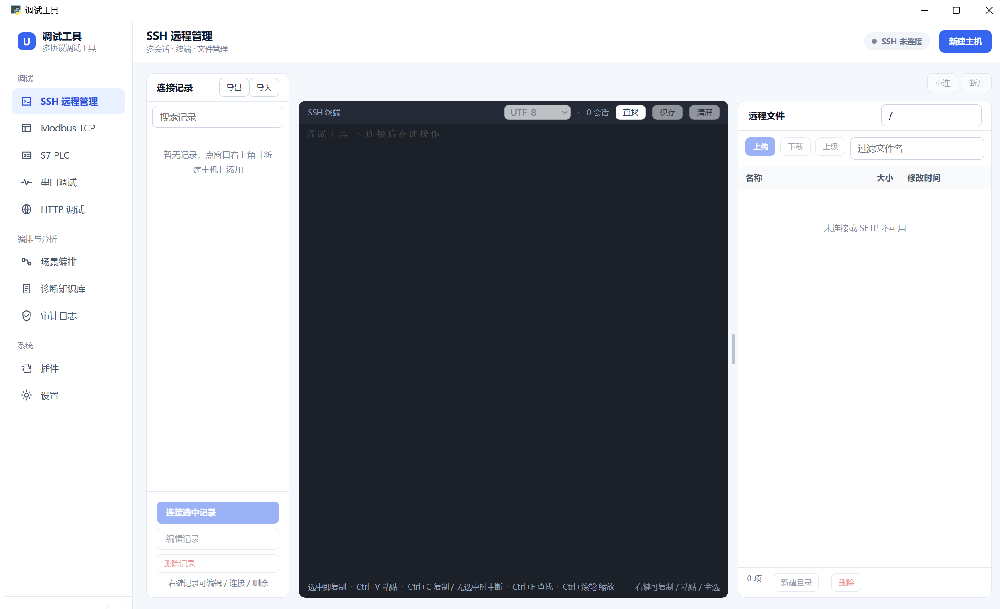

五协议一个窗口：SSH / Modbus / S7 / 串口 / HTTP —— 调试、写入、留痕一次做完
gitee 打不开？改用 备用下载（GitHub Pages，同一安装包、同一 SHA256） ｜ 历史版本见 Release 页；版本清单见 version.json（含 SHA256 校验值）

双击安装后弹出的是原生 Windows 窗口：没有地址栏、没有标签栏，也不打开浏览器。界面由 Vue 3 渲染，本地服务只监听 127.0.0.1，不上传任何数据。
沿用经典 Tk 版的能力，换一套现代界面与独立窗口形态
${名称} 传进后面的地址或 URL两个版本是独立安装包，可同时安装、互不影响
| 对比项 | 经典 Tk 版 | 本桌面版 |
|---|---|---|
| 界面技术 | Python Tkinter | Vue 3 + WebView2 原生窗口 |
| 运行形态 | 单一桌面进程 | 本地 uvicorn 服务 + 原生窗口（仅监听 127.0.0.1） |
| 安装包 | UltimateTool.exe（v1.6.8） | UltimateToolWeb-Setup.exe（v1.0.10） |
| AppId / 安装目录 | 独立 | 独立，与旧版不冲突 |
| 依赖 | 无额外运行时 | 系统自带 WebView2 Runtime（Win10/11 通常已预装） |
| 在线更新 | 软件内检查并下载 | 已支持：设置页检查、多源下载、SHA256 校验、一键安装 |
| SSH / Modbus / 串口 / 插件 | 已实现 | 已实现，接口与参数保持一致 |
| 西门子 S7 | 不支持 | 已支持：DB / M / I / Q 读写、批量读、块解析、地址表轮询 |
只需三步，即可上手
UltimateToolWeb-Setup.exe。Ctrl+1~9 可快速切到前九页。设置页「软件更新」区会自动检查新版本，发现新版可一键下载安装。